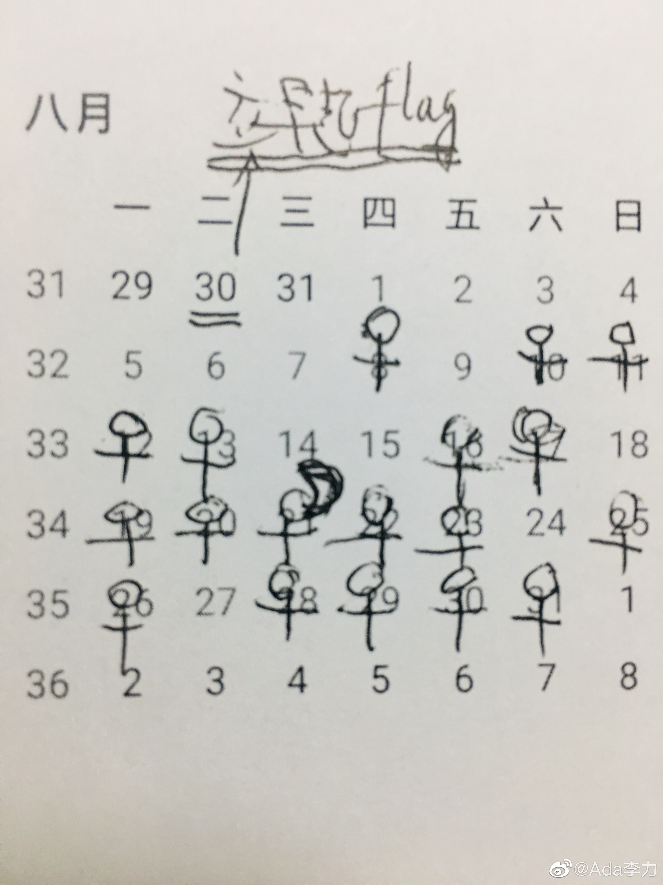

#不明所以#
微博10年做的报告，给我的关键词竟然是熬夜，图一
我还在想怎么这么巧呢，8月份我正好立了个早起的计划，要求自己不管多晚入睡，第二天早上7点就要起床。这个计划执行的不怎么样，早起达成率在58%，勉强过半，其中还有一次早起是整晚没睡，虽然早起了，但中午开始我就补觉去了。图二
早起的关键因素还是早睡，手环监测的8月份的睡眠数据，平均入睡时间在夜里1:30，看起来下个月要早起目标完善的比较好，先要解决晚上睡不着的问题。图三
于是马上下单买了三瓶褪黑素，晚上死活不肯睡的时候吃上一粒，尽量早睡。图四
微博10年做的报告，给我的关键词竟然是熬夜，图一
我还在想怎么这么巧呢，8月份我正好立了个早起的计划，要求自己不管多晚入睡，第二天早上7点就要起床。这个计划执行的不怎么样，早起达成率在58%，勉强过半，其中还有一次早起是整晚没睡，虽然早起了，但中午开始我就补觉去了。图二
早起的关键因素还是早睡，手环监测的8月份的睡眠数据，平均入睡时间在夜里1:30，看起来下个月要早起目标完善的比较好，先要解决晚上睡不着的问题。图三
于是马上下单买了三瓶褪黑素，晚上死活不肯睡的时候吃上一粒，尽量早睡。图四


- 